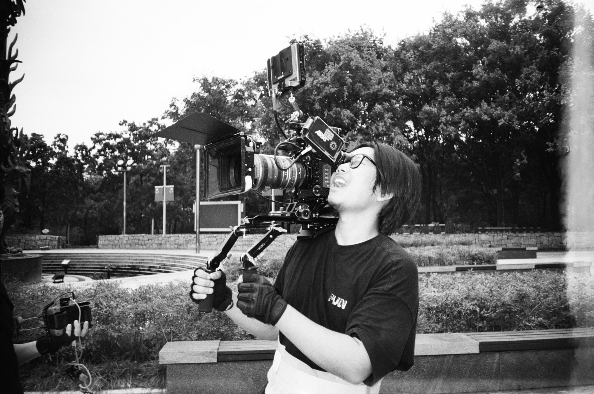

静帧速览
左右滑动或拖拽浏览，点击画面查看完整静帧。
作品静帧
以下画面选自本人参与项目的电影静帧。
关于

柳示其，英文名 LLLiui777，影视摄影师、摄影指导与导演，现就读于四川传媒学院影视摄影与制作专业（2023-2027）。
工作涉及剧情长片、剧情短片、实验影像、纪录片与音乐录像带。习惯在真实场景里寻找自然的光，也愿意在风格化影像中保持克制。
过往经历
- 剧情长片（摄影指导）
- 爷爷不放马，计划 CCTV6 播出
- 导演作品
- 麦子 女子 面子（导演 / 摄影指导）
- 剧情短片（摄影指导）
- 第101次相遇、回响一号位、冬青的记忆、忘江、采风、华丽的外出
- 掌机
- 只有山知道、尘光之隙
- 灯光指导
- 离地之前
- 摄影 / 短片项目
- 老者、阿杆正传、杀死了一只牛、打桩机、泽生街、龙哥、裁缝铺、无独有偶、梦当当、鱼与渔、秉烛待旦、道歉师、她在阳光下、红冬、鸢尾花
- 纪录片
- 平芜尽处是春山（幕后纪录）、高梁红了、鲜红的一角之大别红魂（幕后纪录）
- 音乐录像带
- COCOON、镜中之舞、酷儿
获奖与入围
- SUMC 春创映 最佳摄影、最佳声音设计
- 第十届四川省大学生原创微电影大赛 三等奖
- 洛杉矶短片电影节 获奖
- Cal Film Festival 获奖
- AIGC 大学生 MV 比赛 优秀奖
- Best Shorts Competition 获奖
- 入围 加州电影节、首尔极限电影节
常用工具
- DaVinci Resolve、Final Cut Pro、Adobe Premiere Pro、Photoshop、Lightroom、Blender
期待合作
电影、广告、MV 与实验影像的摄影和导演工作，欢迎沟通档期与资料。